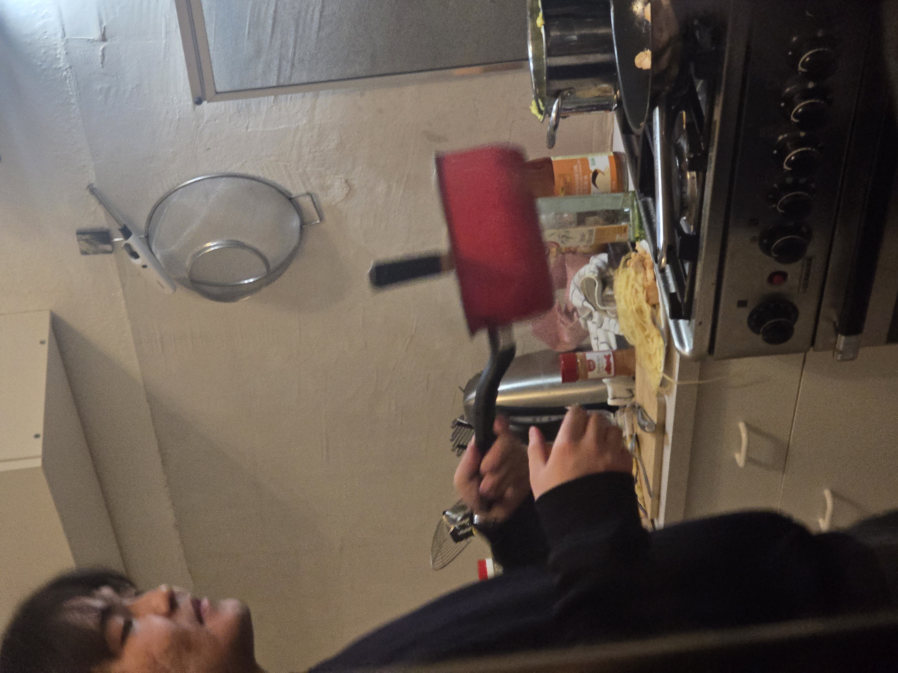

WELCOME TO NURS' CORNER XD~* live * laugh * burn the chicken *~
|
Nurs' Chicken Spaghetti
| Prep Time: 5 minutes | Cook Time: Variable (until burning occurs) | Servings: 1 |
:: INGREDIENTS YOU NEED ::
- 500g Edeka chicken breast
- 1 ml Cooking oil (measure precisely!)
- 1 pinch Black pepper (for later, or just to look at)
- As needed Cold water
- 1 box Spaghetti pasta
:: PREPARATION INSTRUCTIONS ::
- Open up your package of Edeka chicken. Do not remove it from the box. Place the entire box, raw chicken and all, directly into the microwave. Stand back and wait for the raw chicken to consume its surroundings in the microwave.
- Carefully remove the box from the microwave. Dump the chicken out and chop it into pieces. Crucial Note: Do not pat the chicken dry. Keep all that moisture and surface water completely intact. Do not oil the chicken, do not season the chicken, and absolutely do not rub any seasonings into the meat. It must remain entirely plain.
- Pour exactly 1 ml of oil into a pan and crank the stove up to high heat. Toss your chopped, wet, unseasoned chicken directly into the hot pan.
- Keep cooking the plain chicken over high heat. Watch as the juices mix with the 1 ml of oil. Continue cooking until the liquid completely evaporates and the chicken aggressively sticks to the bottom of the pan.
- Just as it sets in, pour cold water directly into the pan to stop it from burning. The chicken is now boiling in a pool of water.
- Let one piece of chicken fall onto the ground, pick it up, rinse it, and put it back into the pan.
- Despite Nurs' best efforts with the water, let the chicken burn anyways.
- While the chicken burns, grab a separate pot. Pour cold water into it and set it on the stove. Drop your dry spaghetti directly into the cold water. Do not salt the water. Turn on the heat, let the chicken completely burnt, but the pasta water isn't even boiling yet.
- Put the saved pinch of pepper into the pasta water as it is now starting to boil after 10 minutes.
- Let the pasta spill all over the counter. Spill some vodka over the finished chicken dish.
- Serve. Enjoy!
:: ACTION SNAPSHOT ::

Fig 1.0 - The exact moment chaos unfolded in the kitchen (3000x4000 raw photo).
Comments (4)
@hideokojima said on Oct 14, 2007 @ 04:12 PM
This is the worst fucking thing I've ever seen in my life. Hello SpongeBob
@benjaminnetanyahu said on Oct 14, 2007 @ 04:45 PM
I believe we should increase pressure on goyim so that they finally die an excruciating death.
@iordanulpulii said on Oct 14, 2007 @ 05:02 PM
*Shakes head, I've seen worse but not by much.
@yinzhohan said on Oct 14, 2007 @ 05:19 PM
I can't give any comments. Urgh This is the worst though.
[ X ] Comments have been disabled/closed by the blog owner.